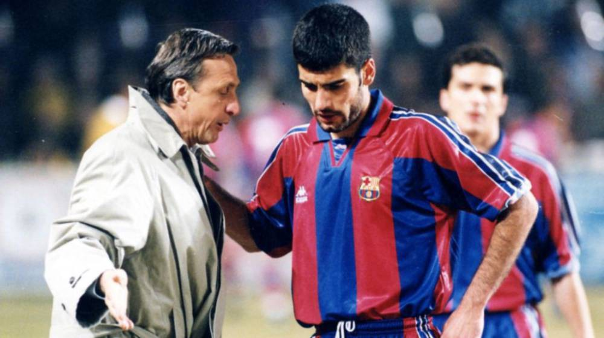
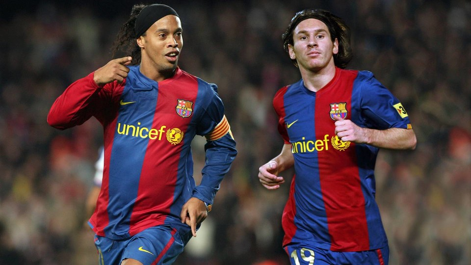
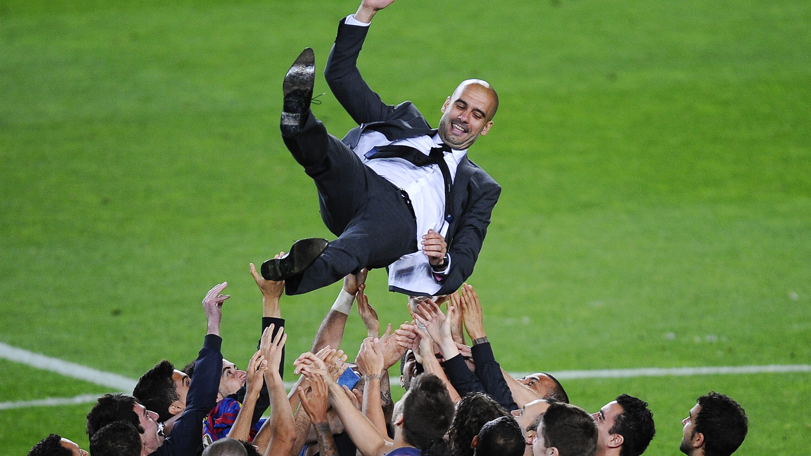
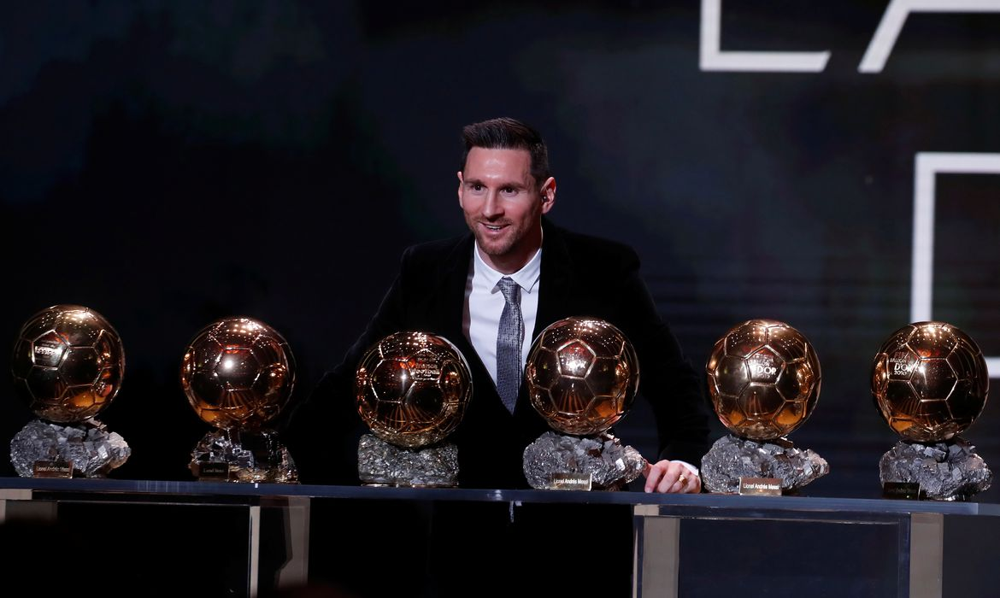

Conquistas
Liga dos Campeões
O Barcelona possui em sua história, cinco conquistas da Liga dos Campeões: 1992, 2006, 2009, 2011 e 2015.
1992
Final da Taça dos Clubes Campeões Europeus de 1991–92 no Estádio de Wembley, em Londres, entre Sampdoria (Itália) e Barcelona (Espanha). O Barcelona venceu o jogo por 1–0 na prorrogação, com gol de falta de Ronald Koeman.
2011
Final da Liga dos Campeões de 2010-11, no Estádio de Wembley, em Londres, na Inglaterra entre Barcelona (Espanha) e Manchester United (Inglaterra). O Barcelona venceu o jogo por 3–1.
2015
Final da Liga dos Campeões da UEFA de 2014–15 Foi disputada no Estádio Olímpico de Berlim, na Alemanha, entre Juventus (Itália) e Barcelona (Espanha). O Barcelona venceu por 3-1.
La Liga
O Barcelona conquistou 26 vezes a La Liga em sua história.
2006
Time comemorando título da La Liga na temporada 2005/06.
2009
Time comemorando título da La Liga na temporada 2009/10.

2019
Time comemorando título da La Liga na temporada 2018/19.
Copa do Rei
O Barcelona é o maior vencedor da Copa do Rei, com 30 títulos.
2016
Elenco comemorando o título, após a final da Copa do Rei da temporada 2015/16.
2017
Elenco comemorando o título, após a final da Copa do Rei da temporada 2016/17.
2018
Elenco comemorando o título, após a final da Copa do Rei da temporada 2017/18.
A era Cruyff
Aconteceu durante a década de 90, e por incrível que pareça, o poderoso Barça não conquistava um título nacional a LaLiga há 13 anos, não há duvidas que o holandês teria muito trabalho para fazer o Barcelona retomar os caminhos de glórias, e então começou a trabalhar e rapidamente estruturando a equipe, com o apoio dos talentos de casa Pep Guardiola e Guillermo Amor, junto com estrangeiros na Espanha Andoni Zubizarreta e Txiki Begiristain, além de talentos internacionais como Ronald Koeman (atualmente treinador do Barcelona), Michael Laudrup e Hristo Stoichkov. Com o "novo" Barcelona ficou no topo da tabela já na segunda semana e permaneceu por lá o ano todo, terminando dez pontos à frente do segundo colocado, Atlético de Madrid e assim conquistando o troféu da LaLiga de 1990/1991, e dominando a Espanha pelas próximas três temporadas. Até que em 1992 veio a conquista mais importante o Barça de Cruyff ficou conhecido como "Dream Team" após conquistar a primeira Copa dos Campeões(atualmente liga dos campeões) da história do clube, com o improvável gol de falta de Ronald Koeman já na prorrogação, derrotando assim os italianos Sampdoria na final em Wembley. Ao todo foram 8 conquistas entre 1990 a 1994, quatro La Liga: (1990–91, 1991–92, 1992–93, 1993–94), Três Supercopa da Espanha: (1991, 1992 e 1994), Uma Copa del Rey: (1989–90), Uma Liga dos Campeões da UEFA: (1991–92), Uma Supercopa da UEFA: (1992) e Uma Taça dos Clubes Vencedores de Taças: (1988–89).
A era Ronaldinho
Foi um período de revolução no Barcelona, Ronaldinho Gaúcho fez sua estreia com a camisa do Barça no dia 27 de julho de 2003 em um amistoso de pré-temporada contra a Juventus-ITA, em Boston, nos Estados Unidos, que terminou empatado em 2 a 2. A passagem do meia Ronaldinho Gaúcho pelo Barcelona fez o clube mudar de patamar no cenário europeu. Antes da chegada do brasileiro, em 2003, vindo do Paris Saint-Germain, o time catalão havia vencido a Liga dos Campeões da Europa somente uma vez, na temporada 1991/92, quando superou a Sampdoria-ITA na final. O clube tinha ainda outros três vice-campeonatos, obtidos nas temporadas 1960/61, 1985/86 e 1993/94. Depois, já com o talento de Ronaldinho em campo, o Barça faturou a edição de 2005/6 — quando o meia foi considerado o melhor jogador da competição pela Uefa — e os títulos de 2008/9 2010/11 e 20114/15. “O Barcelona demorou para se tornar um grande europeu em número de títulos. Era até estranho. A primeira (Liga dos Campeões) que o Barcelona vai ganhar foi contra a Sampdoria (1991). Durante anos, só tinha isso. E olha que teve times bons, mas não ia. Realmente, com o Ronaldinho Gaúcho o time embala”, avalia o jornalista esportivo e pesquisador Celso Unzelte. Segundo o historiador, o estilo de jogo característico do time catalão — de toque de bola e muita técnica — foi implementado nos anos 1970 com a chegada de Johan Cruijff, que encantava o mundo atuando pelo Ajax e pela seleção holandesa naquela época quando desembarcou em Barcelona. No total, Ronaldinho fez 94 gols nos cinco anos que vestiu o uniforme do Barcelona. Também pelo clube espanhol ele obteve sua maior conquista individual da carreira: o prêmio de melhor jogador do mundo da Fifa nos anos de 2004 e 2005.
A era Pep Guardiola
Como técnico, iniciou sua carreira no Barcelona B, ganhando o título da Quarta Divisão Espanhola em sua primeira temporada, na temporada seguinte, assumiu o time principal do Barcelona e, apartir dai começou-se a era gloriosa e de amplo dominio do time blaugrana em solo Nacional e Europeu, conquistou a primeira tríplice coroa da história do clube (La Liga, Copa do Rei e Liga dos Campeões da UEFA) e, no ano de 2009, o único sexteto da história do futebol, ao fazê-lo, se tornou o técnico mais jovem a vencer a competição continental europeia. Após conquistar a Liga Espanhola e a Liga dos Campeões em 2011, foi agraciado com a medalha de ouro do Parlamento Catalão, a maior honra da instituição. Ele deixou o Barcelona em 2012, tendo conquistado quatorze títulos, um recorde na história do clube, deixando um time formado e bem organizado cheio de talentos como, Iniesta,Xavi, e Messi, o último hoje entra em discussões se de fato é o maior jogador de futebol da história ou pelo menos de sua geração, iremos abordar mais sobre, no próximo tópico.
Lionel Messi: O Rei de Barcelona
No século 20, especialmente no final e graças a Cruyff, o Barcelona já era um grande clube. No entanto, a virada para transformar os Blaugranas de um grande clube em um clube vencedor tem nome e sobrenome: Lionel Messi. Contudo, o jovem garoto brilhava nas categorias de base do Barça, e desde então já chamava a atenção da diretoria. Na temporada 2003-2004, quando ainda tinha apenas 16 anos, Messi estreou pela primeira vez em um amistoso com o Porto, que marcou a abertura do novo estádio Do Dragao. No torneio seguinte, Messi fez sua primeira aparição em uma partida oficial em 16 de outubro de 2004, na vitória do Barcelona contra o Espanyol no Estádio Olímpico (0-1). No entanto, na temporada 2008/09, e agora sem Ronaldinho ao lado dele, Messi se tornou a principal estrela da equipe do Barça. Desde a estréia de Messi, o Barcelona ganhou 20 grandes troféus, o dobro de Madri, sendo 10 La Liga, 4 Liga dos Campeões e 6 títulos Copa Del Rey. Enquanto o Real Madrid conseguiu vencer 4 vezes a La Liga; 4x Liga dos Campeões e 2x Copa del Rey. Em resumo, Messi conseguiu conquistar o Barcelona com um total de 34 troféus desde a sua estreia. São 5 a mais que o Bayern e 14 a mais que o Real Madrid que está acompanhando, a cada temporada Messi nos surpreende, não só pelo seu futebol mágico, mas também pelos recordes que está quebrando, atualmente já e o maior artilheiro da seleção argentina e Barcelona, Segundo maior artilheiro da Liga dos Campeões, maior artilheiro do El Classico, maior ganhador de bolas de ouro com seis conquistas e cinco chuteiras de ouro, premiação dada ao maior artilheiro da temporada.
Jorginho FC
Página desenvolvida, afim de homenagear os 121 anos de história do FC Barcelona, sem fins lucrativos
© 2020. Por George Daniel.